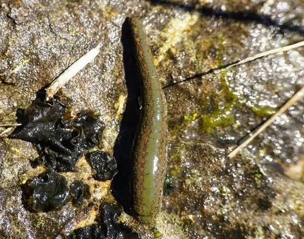

其他无脊椎动物 · 动物界
地中海医蛭 Hirudo verbana

体背有橙黄纵纹的吸血蛭类，栖于地中海地区淡水湿地，曾广泛用于放血疗法，现用于显微外科。
- 分类
- 门环节动物门纲蛭纲目无吻蛭目科医蛭科属医蛭属
- 栖息环境
- 淡水湿地、池塘、沟渠与牲畜常饮水的浅水处
- 地理分布
- 地中海沿岸及东欧的淡水湿地
- 保护级别
- 野外种群因湿地排水与过度捕捉下降，需关注
物种志
地中海医蛭的体长约八至十二厘米，体扁平，体背橄榄绿至黑褐色，有六条橙黄色纵纹，腹面颜色较浅。体前后各有一个吸盘，前吸盘中央有口，口内有三个颚，颚上排列细密的齿，能切开皮肤形成 Y 形伤口。体节明显，体表有感觉乳突，能感知水中的振动与化学信号。
它分布于地中海沿岸及东欧的淡水湿地、池塘和沟渠，以吸食哺乳动物的血液为生，可长时间不进食而存活。它是传统医学放血疗法使用的主要蛭类之一，如今在显微外科和整形外科中用于缓解静脉淤血、促进皮瓣成活。野外种群因湿地排水和过度捕捉而下降。接触野外水体时应避免长时间浸泡，被叮咬后不宜硬拉，可用指甲或钝器轻拨使其脱落。
形态与习性
- 体长约八至十二厘米，体扁平
- 体色橄榄绿至黑褐，背有六条橙黄纵纹
- 颚与齿三个颚，齿细密，切开 Y 形伤口
- 食性吸食哺乳动物血液，耐饥力强
- 应用显微外科与皮瓣移植中缓解淤血
- 处理被叮咬勿硬拉，轻拨使其脱落
趣味知识
- 它咬出的伤口是 Y 形的，三个颚各留下一道口子。
- 它吸饱一次血可以几个月不再进食，饿着也能活。
- 医生把它接在断指再植的指尖上，让淤血慢慢渗出来。